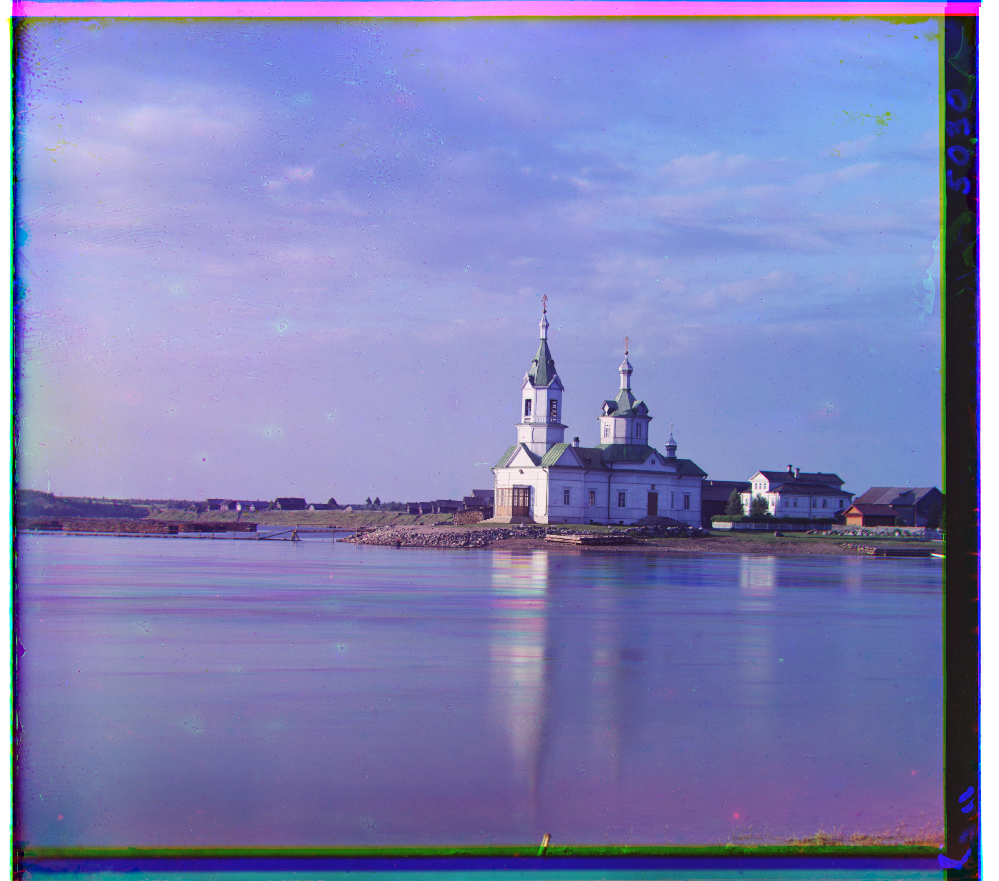
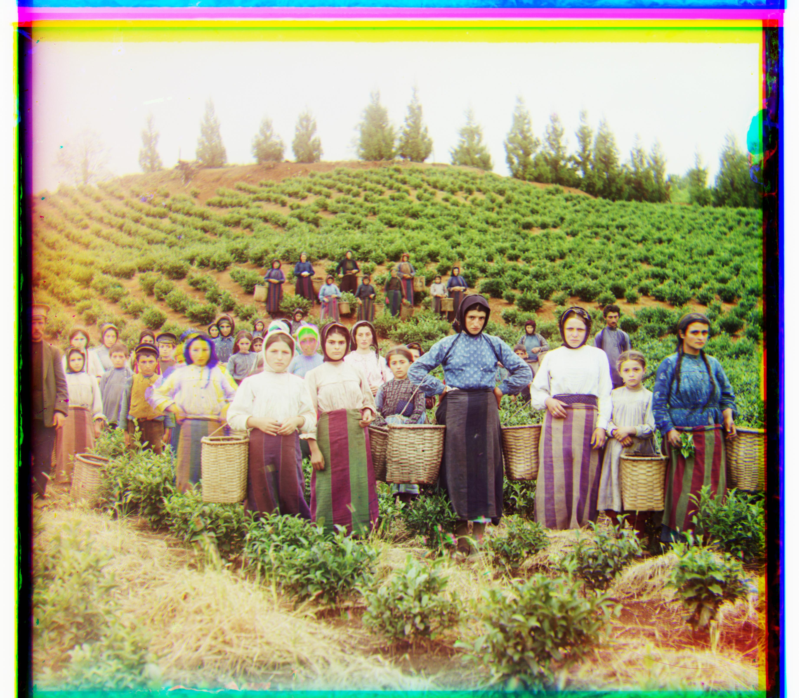
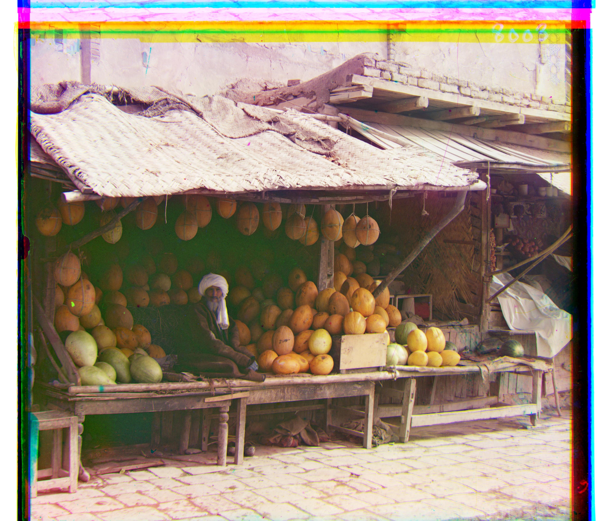
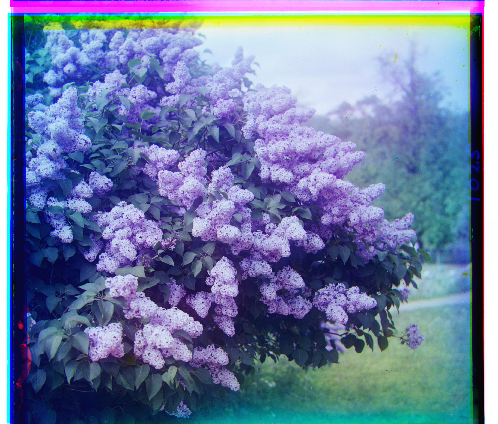
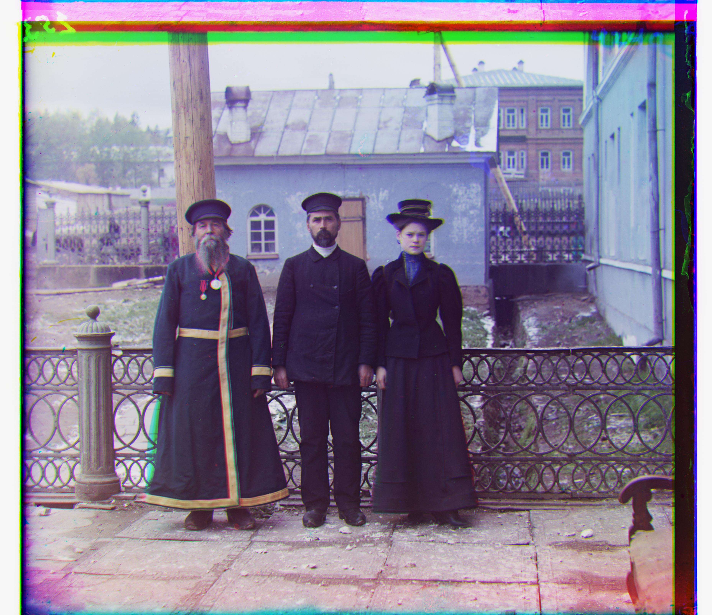
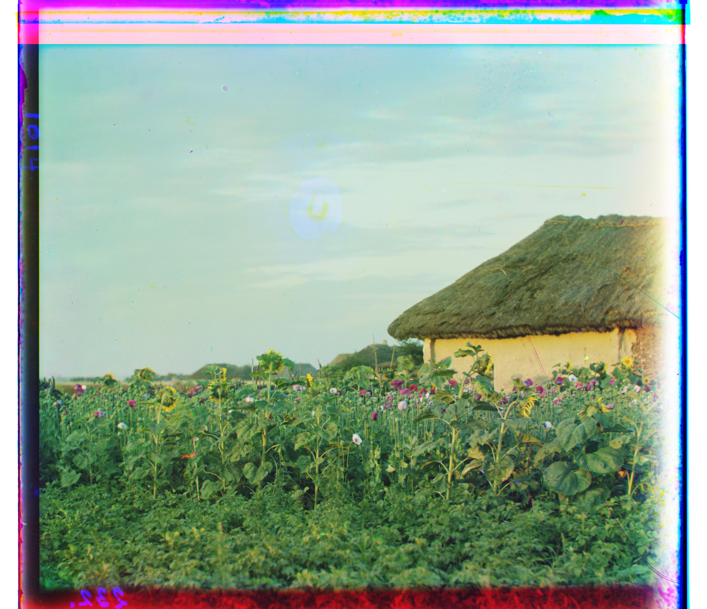
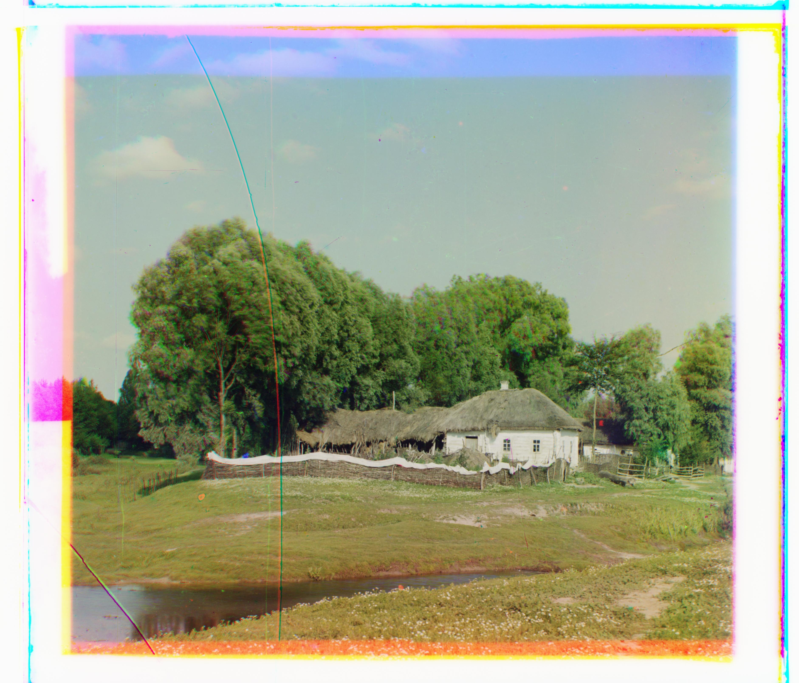
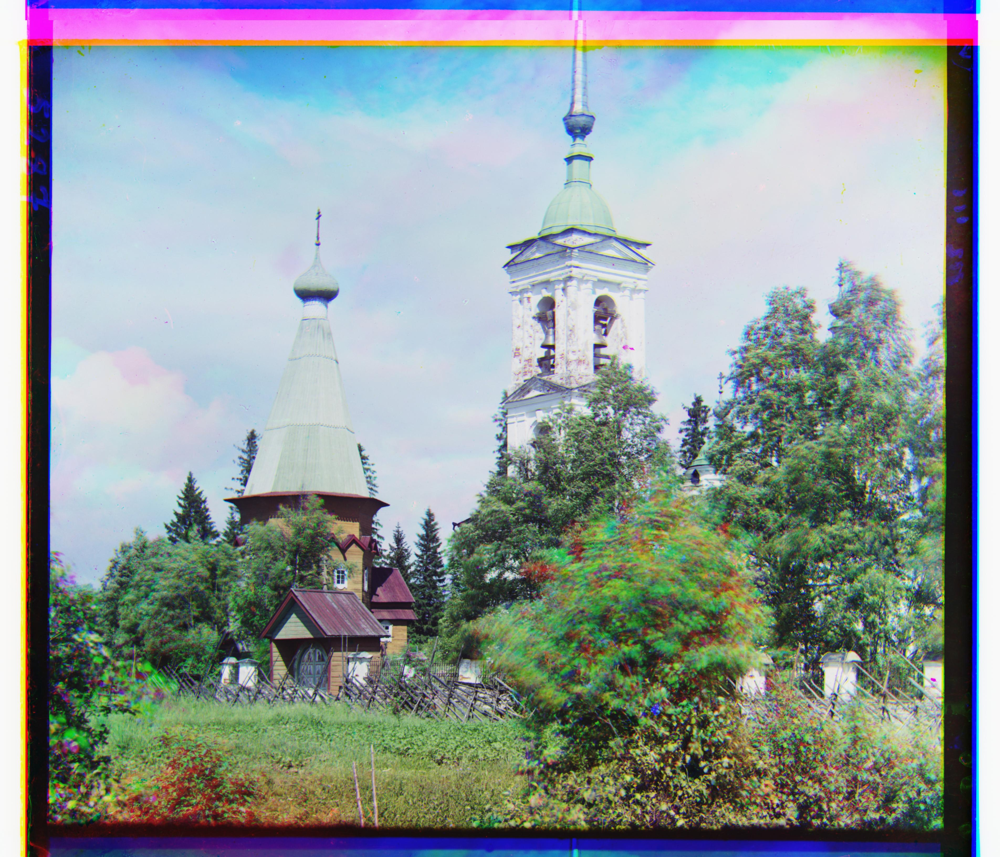
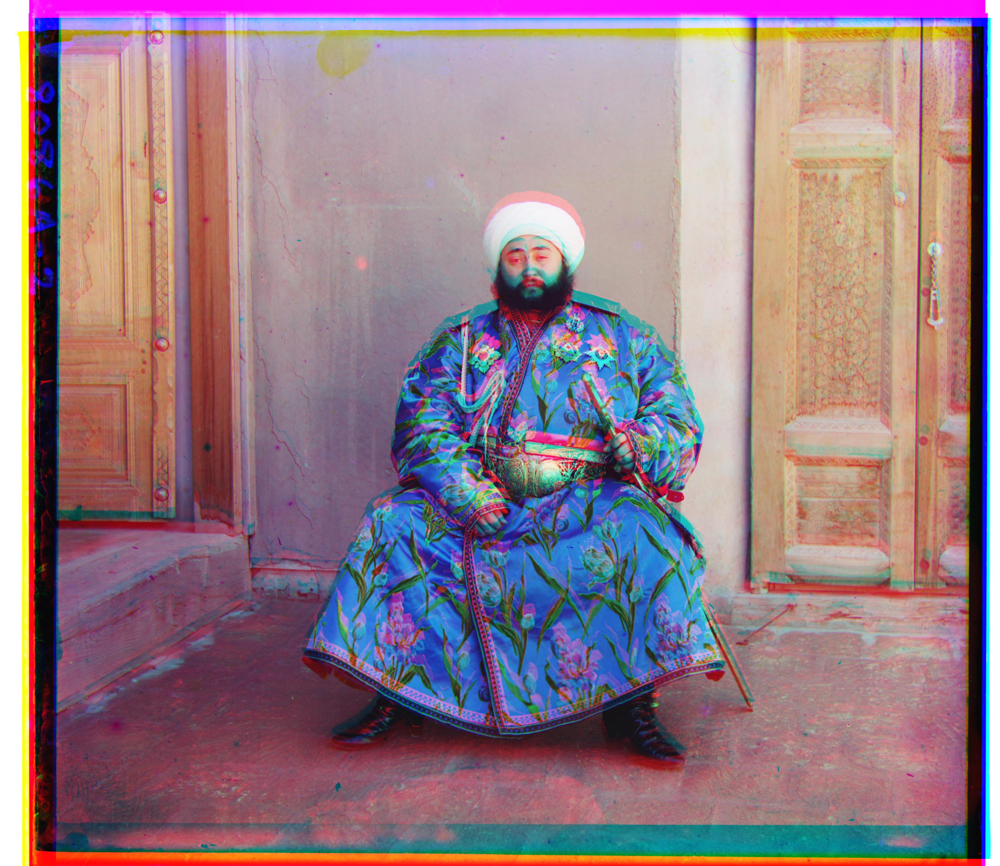

Approach
In this project, I reconstruct color photographs from original Prokudin-Gorskii glass plate scans. Each scan stacks 3 separate grayscale exposures of the same scene (filtered via blue, green, and red filters) into a single vertical image. I split each plate into three equal segments of height $h = \lfloor H/3 \rfloor$, corresponding to the Blue ($B$), Green ($G$), and Red ($R$) channels. Since the 3 exposures were captured sequentially, minor camera or scene movements caused positional offsets between them. To produce a aligned color image, I decided to align $G$ and $R$ to the reference $B$ channel by finding the optimal 2D integer displacement $(dx, dy)$ for each, shifting them via np.roll, and stacking all three channels.
Single-Scale Alignment
To score how well a candidate shift matches, I used the L2 (Euclidean) distance as L2 was simpler to reason about for this pipeline. Since the black plate borders don't move between channels and would otherwise dominate the score, I made the decision to crop 15% off each edge before comparing: $$I_c = I[0.15h : 0.85h,\ 0.15w : 0.85w]$$ Then, for every candidate shift $(dx, dy)$ in a $[-15,15]\times[-15,15]$ window, I compute $$D(dx,dy) = \sqrt{\sum_{i,j} \big(\text{roll}(I,(dy,dx))_c[i,j] - B_c[i,j]\big)^2}$$ and keep the shift that minimizes it: $$(dx^*, dy^*) = \arg\min_{(dx,dy)} D(dx,dy)$$ This brute-force search works well on the low-resolution jpgs, where the true displacement is always well within the 15-pixel window.


Multi-Scale Pyramid Alignment
The full-size .tif scans are roughly 9000 pixels tall, and the true displacement between channels can exceed 100 pixels: far outside a [-15,15] window, and far too slow to brute-force at that resolution anyway. So I recursively downsample the image by a factor of 2 until it's small enough (≤400px tall) that a [-15,15] search is both fast and guaranteed to contain the true shift: $$I_{k+1} = \text{downsample}(I_k,\ 0.5), \quad \text{base case: } h_k \le 400$$ At the coarsest level I run the single-scale search above to get a shift. Moving back up each level, I double that shift (since the image just doubled in size) and refine it with a small local search (window = ±2) to correct for any rounding introduced by the downsampling: $$(dx_{k-1}, dy_{k-1}) = 2\cdot(dx_k, dy_k) + \arg\min_{(\delta_x,\delta_y)\in[-2,2]^2} D_{k-1}\big(2dx_k+\delta_x,\ 2dy_k+\delta_y\big)$$ repeating up to full resolution, using the same L2 metric and border-cropping at every level.









My Own Images
I chose three images from the Prokudin-Gorskii collection at the Library of Congress: a house in a sunflower field, a cottage by a river, and some church towers. I picked them mainly because I liked how they looked, but they also turned out to be a good test for the pipeline; all three have real displacements well over 100 pixels, several times larger than any of the provided example images, so they push the pyramid's coarse-to-fine search harder than the given dataset does.



Failure Case
emir.tif fails to align because my metric $D(dx,dy)$ implicitly assumes that at the true alignment, corresponding pixels have similar brightness across channels: $I(x,y) \approx R(x,y)$. For emir, the clothing's actual color means this doesn't hold even at the correct shift, so $D$ is minimized at the wrong displacement instead. A gradient-based metric (computing $D$ on Sobel edge magnitudes $|\nabla I|$, $|\nabla R|$ instead of raw pixels) would likely fix this, since edges tend to be more consistent across channels than raw brightness, but I didn't implement it since the assignment allows one image to be misaligned.
